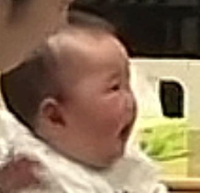

在中国篮球历史上我愿称其为第二绝杀球，第一还是王7绝杀斯洛文尼亚那个！
这种极限绝杀在NBA才能上演，我是广东球迷，虽然被上海绝杀，但庆幸看到这一神仙球。
徐杰都晚安了硬是被胡明轩叫醒了
胡明轩两罚不中 今晚估计睡不着
本来还能留个全尸，这下好了直接摇匀了[泪奔]
您应该研究一下电梯冲顶
向伟人的后代致敬！祝:毛家后代身体健康，英才辈出！
祝福敬爰的毛主席的家人都健康平安[感谢][感谢][感谢]
韶山毛氏，英才辈出
中国人民永远都记着毛主席毛家为国牺牲的那么多毛家人，敬英雄[感谢]
祝伟人后代永远健康长寿[感谢][感谢][感谢]
在拉屎拉尿都控制不了的年纪他却懂得了挑衅自己的老子[泪奔]
oi！ 
还是旁边的猪听话一点[比心]
其实这样的孩子妈妈带的最辛苦[泣不成声][泣不成声]
开始认母期了[捂脸][捂脸][捂脸]
这孩子绝对孝顺，从小就疼爹，害怕累着他爹
看着妈妈赢了，实际输的彻底，累死妈妈[捂脸]
昨天刚生的！用你今晚吃的食物帮忙取个小名呗[送心][送心][送心]
爸爸是拖拉机🚜吗？一上车就咔咔咔……
关键是妈妈抱过来后，小屁孩还对他爸爸“啊”一声。哈哈哈哈！！！
这种妈妈是最辛苦的了[九转大肠][九转大肠]
爸爸：大家都看见了，不是我不愿意带孩子哦
剖腹产听说上手术台的时候全身会冰冷，然后一直发抖，是不是真的[流泪][流泪]
养孩子真不容易，好羡慕白素贞，生下来就进了雷峰塔，一天没管，再见时已经考上状元
初为人母，谁懂[尬笑]
小狮子这位置真超绝安全感
之前保存的[流泪]
[可怜]这小鼻嘎好可爱
杀伐一生，柔情全留给孩子[得意]
它是真的很宠很爱它的孩子
小时候觉得食草动物很可怜，长大了又觉得食肉动物的一生才是真的可怜
木法沙和幸巴
我的身后充满了动力
不成狮王，就是死亡（索罗大帝除外）

狮子的一生都在战斗，成为狮王哪怕以一敌多，哪怕战死也不会退缩，狮子就是无畏、勇气的象征。
狮子还好点，至少有亲子时光。老虎才惨，从儿子出生时就陪不了多久，等长大了还得被儿子杀
木法沙：辛巴你看天空中的星星，他们都曾经是一位伟大的国王
人人都怕的狮王 却把孩子保护的好好 就像在别人眼里暴脾气的父亲却把所有温柔都留给了孩子一样
还真是这么回事。那叫“艳”的呢？我认识一个姓林，一个宋，叫艳。这俩都好“色”
没错，尤其各种“文静”，没一个文静的[捂脸]
我认识李静，王静，张静，赵静，于静，侯静，齐静，马静，韩静，没一个省心的[捂脸]
名字真的很神奇，我认识叫“帅”的，长得都不帅
木门应该还是临走时生气踹烂的[看]
ps：入户盗窃不看金额，直接入刑[捂脸]
help咪help咪

猫：救……救一下
猫:你别咪了，我快死了
若紫胤落败，我将亲自关上电视，收拾残局[看]
七年了 大家还在抓卧底 [泣不成声]
主啵不语，只一味的“这是谁唱的”
我真的笑不行了，谁来救救我[逞强落泪]
桃乌君啥时候发的，现在去没看到啊[捂脸]
笑死了[捂脸]
张凌赫也在这个团?
水牛低哞至今无人认领
为什么这首歌好听地一阵一阵的，因为蔡徐坤和尤长靖不是每句都唱[捂脸]
古信到底是谁 吵死了
笑死我了有人说有人觉得自己词太少故意的[捂脸][捂脸][捂脸][捂脸]谁懂我笑点
团都不在了，还在研究
省流：“这是谁唱的啊”“谁一直在下面念经啊”
老师全程：“这谁唱的？”“谁在下面念经”[捂脸][捂脸]
好了，都不要争了，歌词每位唱主都在这里[憨笑]
我都快笑疯了 你咋一点都不笑啊哈哈哈哈哈哈哈哈哈哈哈哈哈哈哈哈哈哈哈哈哈哈哈哈哈哈哈哈哈哈哈哈哈哈哈哈哈哈哈 固信 固信 固信[黑脸]
怎么老感觉有一个人的声音特别低在里面浑
不好意思老师，那段“有点难听的”rap好像是我家明昊唱的[眼含热泪]我一边看一边很命苦的笑[憨笑]
这个消音版视频我刷一次笑一次，到底是谁的水牛音和固信
都七年了最近咋就开始抓了
有一说一蔡徐坤真的天选爱豆啊
我就想知道那一直垫音的孤信是谁[黑脸]困扰我好多年了
对不起rap是我们明昊唱的。[憨笑]
念经是fcc还是lyj不清楚，搁那固幸的绝对是王子异太明显了
我真服了到底是谁一直声音尖尖的又很死难听[憨笑]
首先 这首歌只有蔡徐坤粉丝和尤长靖粉丝可以笑着点进来笑着点出去 其次 老师！你说难听的那段rap 王子异后面那段rap 是黄明昊唱的！尤长靖不唱rap的[九转大肠]
谁懂这个股性
真干过这事，夜宵遇到警察办案，其中一个超帅，于是我拍照忘关灯了[黑脸]旁边胖胖的警察叔叔笑的脸更大了[黑脸]
这女的也是演网剧的，演的特别好，自然，适合拍戏，这回演电视剧了真不错，恭喜恭喜
钟伟的这张剧照是这么拍出来的吗[泪奔]

你敢信这是幼儿园的孩子[捂脸]
这工作劲头一个月底薪必须给1万[尬笑][尬笑][尬笑]
“那你要我怎么办，我进一步，你退十步。”
哥们 复制字的时候检查一下 是暧昧不是暧味[黑脸]
《天外来物》的前奏，虽然短但好有感觉
陌生人 弱弱地问一句：相爱能抵万难吗[流泪][流泪]
"以往的误会不需要解开，我们长辞永绝就是最好的结果"
像分手后突然发现和对方有关的东西心头一颤[黑脸]
Read more: